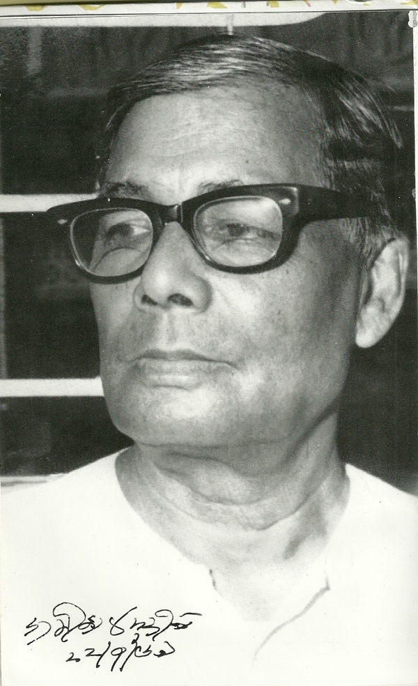

Jasimuddin was born in the village of Tambulkhana in Faridpur District on 1 January 1903 in his maternal uncle's house. His father, Ansaruddin Mollah, was a school-teacher.[5] His mother, Amina Khatun (Rangachhut) received early education at Faridpur Welfare School. He matriculated from Faridpur Zilla School in 1921. Jasimuddin completed IA from Rajendra College in 1924. He obtained his BA degree in Bengali from the University of Calcutta in 1929 and his MA in 1931.[5] From 1931 to 1937, he worked with Dinesh Chandra Sen as a collector of folk literature. Jasimuddin is one of the compilers of Purbo-Bongo Gitika (Ballads of East Bengal). He collected more than 10,000 folk songs, some of which has been included in his song compilations Jari Gaan and Murshida Gaan. He also wrote voluminously on the interpretation and philosophy of Bengali folklore.[7] Jasimuddin joined the University of Dhaka in 1938 as a lecturer. He left the university in 1944 and then worked at the Department of Information and Broadcasting until his retirement in 1962 as the deputy director.[5]